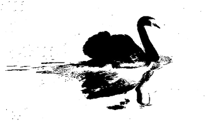

class: center, middle, title-slide .title[ # Tackling the PhD ] .subtitle[ ## <rrtit>Finding the right research question</rrtit> ] .author[ ### <br>Dr. Kumar Aniket ] .date[ ### <rrtit>17 October 2023</rrtit> ] --- class: title-slide-custom class: center,middle # econversation.github.io --- class: center,middle,inverse # The plan --- class: center # Research: .emn[Direction] <img src="images/direction.jpg" height="275" alt="Direction"> Take the time to find your .emob[true north] --- name: figures class: center, top # Research: .emn[Momentum] <img src="images/kick1.png" height="250" alt="Kick1"> Once you have discovered your true north ... ... .emob[kick-start] the research effort with momentum --- class: center # Research: .emn[Stamina] <br> <img src="images/stamina.jpg" height="300" alt="Stamina"> <br> Realise that research requires constantly getting lost ... ... and then .emob[finding your way out] --- class: center # Research: .emn[Invest early] <br><img src="images/kick2.jpg" height="275" alt="Reverse kick"><br> Invest time early on to prevent a disaster ... ... and .emob[changing direction] at a later stage --- background-image: url("images/moon3.jpg") class: left, bottom # .fade[Mission to the moon] .fade[Give the rocket an initial velocity and direction] .fade[Ensure the terminal velocity is zero] .fade[Optimise the path] --- class: right, top ## Casual questions and curiosity? Your angst and pet peeves A narrative you are convinced about Journalistic question <br><br> -- ## What is a good research question? You .embc[don't know] the answer Discover the .embc[academic] wheel add a .embc[relevant] spoke --- .pull-left[ ## .emn[Casual Curiosity] What effect does social media have on people’s minds? ] .pull-right[ ## .emob[Research Question] What effect does daily .emob[use of Twitter] have on the .emob[attention span] of under-16s? ] .cfix[] -- .pull-left[ Has there been an increase in homelessness in Delhi in the past ten years? ] .pull-right[ What .emob[economic], .emob[political] and .emob[social factors] have .emob[effected the pattern] of homelessness in Delhi over the past ten years? ] .cfix[] -- .pull-left[ How can drunk driving be prevented? ] .pull-right[ What effects have the .emob[different legal approaches] had on number of drink-driving related .emob[death] across the world? ] --- class: center, top ## How can drunk driving be prevented? How do drink-driving deaths vary across countries? <img src="images/drink_driving.jpg" height="365" alt="drink-driving"> <!--  --> .footnote[ *Proportion of road accident deaths caused by drink-driving in 2015* ] --- # How can drunk driving be prevented? ### .empb[Formulating a research question] .pull-left[ How do drink-driving deaths vary across countries? How do drink-driving deaths vary across time? How do drink-driving deaths vary .emob[across countries] and .emob[over time]? ] -- .pull-right.tack[ Do drink-drivers .emob[respond] to .emob[changes in laws]? Do drink-driving laws vary .emob[across countries] and .emob[over time]? ] -- .pull-right.tack[ Or do .emob[laws get tougher] in countries where there are .emob[too many drink-driving deaths]? ] --- ## Google Scholar Search for ".emob[drink driving]" -- <img src="images/drink_gs1.png" width="800" alt="Google Scholar"> --- .pull-left[ .emab[Article:] Willis (2004) et al .emab[Journal]: *Cochrane Database of Systematic Reviews* ] .pull-right[ Cited by .emo[157] .emab[Journal Impact Factor]: .emo[6.754] ] .cfix[] <img src="images/drink_gs1.png" width="800" alt="Google Scholar"> --- ## How do journal publish papers .pull-left[ .empb[Peer-review process] ] .pull-right[ Articles are refereed by two more peer-reviewers who try to evaluate whether research is valid Journals establish their quality through peer-review ] .cfix[] .pull-left[ .empb[Article citation] ] .pull-right[ How many times has it been cited by other authors ] .cfix[] .pull-left[ .empb[Journal impact factor] ] .pull-right[ Average frequency of articles being cited each year ] --- class: center,middle,inverse # Writing the Dissertation --- # .empb[What is a literature?] A group of papers answering the same .emob[academic research question]? ## .empb[What is a survey article?] .emob[Breaks down] a broad research question into chunks .emob[Maps] out the parts of the research question that have been answered Points out the .emob[gaps in the literature] --- # .empb[Background research process] .pull-left[ Read papers to find the .emob[direction] ] .pull-right[ .emob[Familiarise] yourself with the papers in the literature ] .pull-left[ Explore the .emob[footnotes] ] .pull-right[ Best research .emob[ideas] comes out of .emob[footnotes] ] .center.w80.tack[ It is very .emob[messy] but .emob[rewarding] process ] --- # .empb[What is a literature review] .pull-left[ Create a .emob[curiosity] in the<br> reader's mind ] .pull-right[ Gives readers .emob[background information] about the .emob[literature] ] .center.w80.tack[ Helps them .emob[understand] your dissertation ] --- class: center # .empb[Writing a literature review] Arrange papers in .emob[concentric circles] Put your .emob[dissertation] right in the .emob[centre] <img src="images/circles.png" height="200" alt="Circles"> .cfix[] .emob[Map] the relationship between each paper to your dissertation Give them .emob[space proportional] to their .emob[importance] Write the .embc[literature review at the end] --- # .empb[What is research?] Conducting a .emob[systematic investigation] .pull-left[ Using .emob[relevant] sources ] .pull-right[ in order to .emob[establish facts] ] .pull-left[ and reach well founded .emob[conclusions] ] .pull-right[ that either .emob[advances theory] or has some .emob[policy implication] ] --- # .empb[Research plan] .emob[Direction] .emob[Momentum] .emob[Stamina] .emob[Invest early] --- # .empb[Research plan] .emob[Direction:] Take the time to find your true north -- .emob[Momentum:] Once you have discovered your true north kick-start the research effort with momentum -- .emob[Stamina:] Realise that research requires constantly getting lost and then finding your way out -- .emob[Invest early:] Invest time early on to prevent a disaster and changing direction at a later stage --- class:center,middle,inverse # Papers # Ideas --- ## Acemoglu, Johnson, and Robinson (2001) .pull-left[ .emob[Good institutions] *lead to* <br> .empb[high per-capita income] ] .pull-right[ .empb[High per-capita income] countries *establish* .emob[good institutions] ] -- .center[.emob[Reverse causality] ] .center[Important .emob[policy question] ] .footnote[ Acemoglu, D., Johnson, S., and Robinson, J. (2001). The Colonial Origins of Comparative Development: An Empirical ] --- # Settler Mortality .pull-left[ .emn[Acemoglu et al (2001)] ] .pull-right[ use .empb[settler mortality] as **instrument** for the .emob[quality of institutions] ] .center.mygraph.tack[<img src="images/settlers.png" height="250" alt="Settlers mortality"> ] .cfix[] <!-- .footnote[ Acemoglu, D., Johnson, S., and Robinson, J. (2001). The Colonial Origins of Comparative Development: An Empirical ] --> --- .pull-left.tack[ .empb[Reinikka and Svensson (2004)] .emn[Reinikka and Svensson (2004)] investigates whether the .emob[information campaign] the Ugandan Central government initiated between 1995 and 2001 had an impact in increasing the .emob[share of allocated grants] the .emob[schools] were able to obtain for themselves. ] -- .pull-right.tack[ .empb[Burgess and Pande (2005)] .emn[Burgess and Pande (2005)] use a clever econometric technique to examine the impact of Indian government's .emob[bank nationalisation] policy in 1970s on district level .emob[consumption], .emob[savings] and .emob[poverty]. ] .cfix[] .footnote[ Reinikka, R. and Svensson, J. (2004). The power of information: Evidence from a newspaper campaign to reduce capture of public funds. Burgess, R., and R. Pande (2005). Do rural banks matter? Evidence from the Indian social banking experiment. American economic review 95, 3:780–795. ] <style> .pull-left { line-height: 150%; float: left; width: 47%; } .pull-right { line-height: 150%; float: right; width: 47%; } .w25 {width: 25%;} .w48 {width: 48%;} .w45 {width: 45%;} .w55 {width: 55%;} .w50 {width: 50%;} .w75 {width: 75%;} .w60 {width: 60%;} .w80 {width: 80%;} .w90 {width: 90%;} .pl {float: left;} .pr {float: right;} .fs80{font-size:80%;} .fs90{font-size:90%;} .fs110{font-size:110%;} .fs120{font-size:110%;} .fs150{font-size:150%;} h1, h2, h3 { color: #EC5800; } p { line-height: 1.5em; } rr,.rr { color: #002E63; } rrtit { color: #002E63; font-size:90%; } a { color: #002E63; } .inverse { background-color: #D2691E; } .tab { display:inline-block; margin-left: 15px; } :root { --colauthor: #794F3A; --coltitle: #674E47; --colbold: #592720; --collink: #653529; --colem: #00416A; } b,strong {color: var(--colbold);} a {color: var(--collink);} em {color: var(--colem);}*/ .ema {color: rgb(43,106,108);} .emb {color: rgb(184,13,72); } .emc {color: #1034A6; } .emd {color: rgb(64,64,64); } .eme {color: #614051; } .emg {color: #6D351A; } .emgr {color: #696969; } .emn {color: #796878; } .fade {color: #BABABA;} .emk {color: #C3B091;} .emkb {color: #C3B091; font-weight: bold;} .ref {color: #98817B; font-size:110%; } .emo {color: rgb(229,65,6); } .emob {color: rgb(229,65,6); font-weight: bold;} .emoi {color: rgb(229,65,6); font-style: italic;} .empb {color: #003366; font-weight: bold;} .emz {color: #004225; } .emzb {color: #004225; font-weight: bold;} .emzi {color: #004225; font-style: italic;} .emab {color: rgb(43,106,108);font-weight: bold;} .embb {color: rgb(184,13,72); font-weight: bold;} .emcb {color: #1034A6; font-weight: bold;} .emdb {color: rgb(64,64,64); font-weight: bold;} .emai {color: rgb(43,106,108);font-style: italic;} .embi {color: rgb(184,13,72); font-style: italic;} .emci {color: #1034A6; font-style: italic;} .emdi {color: rgb(64,64,64); font-style: italic;} /*.emdb {color: rgb(64,64,64); font-weight: bold;}*/ .footnote {color: gray;} .red { color: red; } .notes {color: #796878; font-size:90%; class: bottom;} .mybox { color:#3D2B1F; background-color:#3D2B1F10; margin:1em; padding: 1em; border-radius: 10px; } .thebox { color:#704214; background-color: #F5DEB320; margin: 0.1em 0.5em 0.1em 0.5em; padding: 0.1em 1em 0.1em 1em; border-radius: 10px; border-color: #704214; border-style: solid; border-width: 2px; } div.outline { border-radius: 10px; padding: 1px 27px; margin-bottom: 2em; margin-bottom: 2em; box-shadow: 0 0 3px #000000; } div.paper { border-radius: 10px; padding: 1px 27px; margin-bottom: 2em; margin-bottom: 2em; /* box-shadow: 0 0 3px #000000;*/ box-shadow: -3px -3px #EEDC8210, -0.1em 0 0.4em #674E4720; background-color: #EEDC8210; border: 2px solid #EEDC8210; } .lali {float: left;} .rali {float: right;} .lpar { width: 49%; float: left;} .rpar { width: 49%; float: right; clear: right; } .lpara { width: 39%; float: left;} .rpara { width: 59%; float: right; clear: right; } .cfix::after { content: ""; clear: both; display: table; } .figw { display: block; margin: auto; max-width: 90%; } .fighalf { max-width: 50%; } .c { max-height: 50px; height: 70%; width: auto; } .mygraph { color: #3D2B1F; background-color:#F3E5AB80; margin: 0.1em 0.1em 1.1em 0.1em; padding: 0.75em; border-radius: 45px; } .roundpic{ border-radius: 45px; } .card { background-color: #bacdd820; border: 2px solid #3B444B50; box-shadow: -3px -3px #EEDC8210, -0.1em 0 0.4em #674E4720; padding: 2px 16px 2px 16px; margin-top: 4vh; border-radius: 12px; font-size:80%; } img.imagecard { width: 100%; border-radius: 12px; height: 414px; /*214px*/ /* fix image distortion*/ object-fit: cover; padding: 36px; background-color: red; } .mygrapha { color: gray; background-color: #F2F3F450; margin: 0em; padding: 1em 1em 0em 1em; border-radius: 10px; box-shadow: -3px -3px #EEDC8210, -0.1em 0 0.4em #674E4720; } .tack { color: #3B444B; border-color: #3B444B; background-color: #F4F4F4; border-style: solid; /*ba*/ border-width: .25rem; /*bw2*/ border-radius: 10px; /*br3*/ padding-left: 1em; /*ph4*/ padding-right: 1em; /*ph4*/ margin-top: 1em; box-shadow: 4px 4px 8px 0px rgba( 0, 0, 0, 0.2 ); } </style> <!-- rgb(184,13,72) #plum rgb(242,151,36) #orange rgb(43,106,108) #dark-teal rgb(64,64,64) #dark-grey --> <!-- ```{r child = '1i.Rmd'} ``` --> <!-- ```{r child = '2k.Rmd'} ``` --> <!-- ```{r child = '3f.Rmd'} ``` --> <!-- ```{r child= '4z.Rmd'} ``` -->